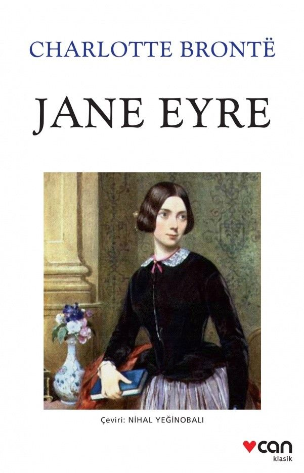

- Yazar: Reşat Nuri Güntekin
- Sayfa Sayısı: 544
- İlk Basım Yılı: 1922
- Konusu:
Romanda, İstanbul köklü bir ailenin kızı olan çocuk ruhlu Feride'nin çok sevdiği nişanlısı tarafından ihanete uğramasıyla kendini öğretmenlik mesleğine adaması ve hayatını kazanabilmek için Anadolu'da şehir şehir dolaşması anlatılır. Melodram ögeleri ile yüklü bir aşk öyküsünün yanı sıra bürokrasi eleştirisi, kadınların Osmanlı toplumunda var olma mücadelesi, öğretmenlik mesleğinin icrası gibi pek çok konuyu ele alır.
Kitabı Satın Almak İçin Tıklayınız
★ Jane Eyre

- Yazar: Charlotte Bronte
- Sayfa Sayısı: 632
- İlk Baskı Yılı: 1847
- Konusu:
Küçük yaşta öksüz kalan Jane Eyre, kendisini hiçbir zaman sevmeyen ancak kocasının vasiyeti üzerine bakımını üstlenen yengesiyle zor bir yaşam sürmektedir. Katı kurallarla yönetilen bir yatılı okula gönderilince, bu kez hayatın başka zorluklarıyla yüzleşmek zorunda kalır. Okulda geçirdiği on yılın ardından öğretmen olarak mezun olur. Edward Rochester’ın malikânesinde mürebbiye olarak iş bulur. Evin gizemli efendisi Rochester’a âşık olur; ancak onu hayal bile edemeyeceği zorluklar ve acılar beklemektedir.
Kitabı Satın Almak İçin Tıklayınız